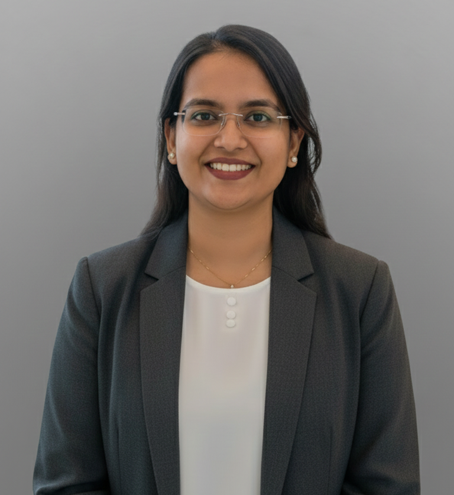

Building production data pipelines, deploying ML models, and architecting cloud infrastructure across Azure & GCP. Master's thesis delivered SOTA results in multilingual speech recognition — WER reduced from 14.29% to 3.82%.

Open to data engineering, ML engineering, and AI roles in Germany & Europe.